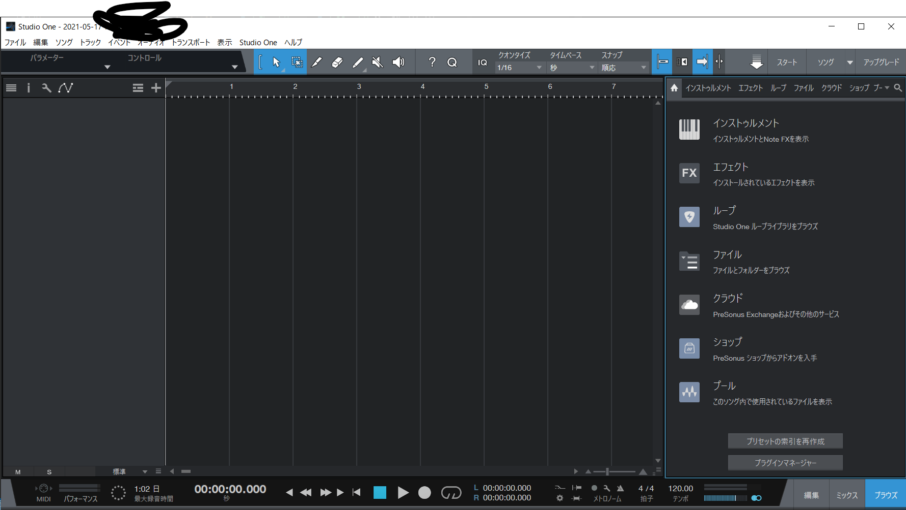
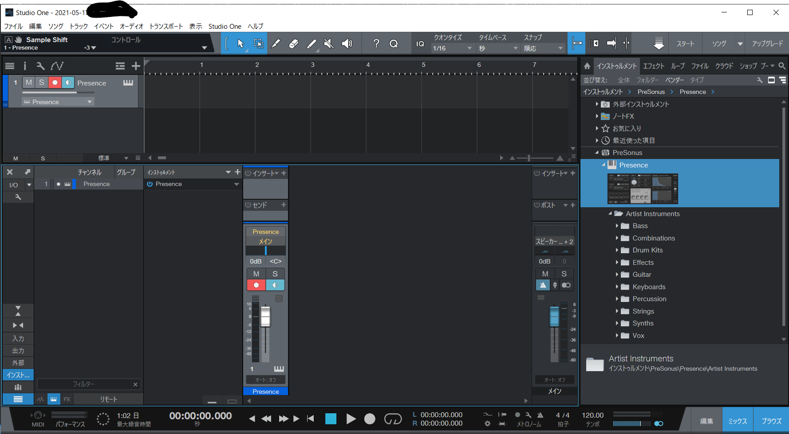
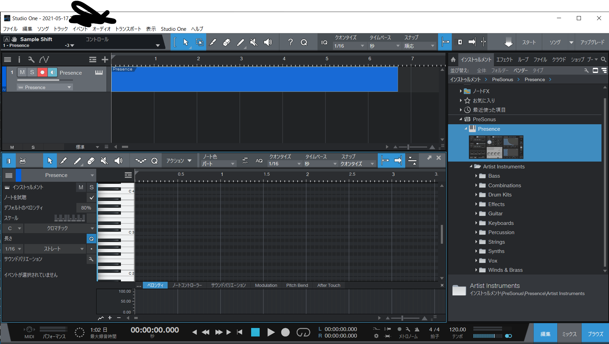

「新規ソング」をクリックしたのち、設定は特に変えず、作成をクリックしてください。 
この画面になったら、「インストゥルメント」→「Presonus」の順番でクリック。 そうするとピアノが映った画面が出てきます。閉じてしまった人は、 
の画面で、「Presonus」と書いてある横にあるピアノっぽいアイコンをクリックしてもう一度開いてください。

の画面で、ちょうど「コピー」と書いてある上のボタンをクリックして、「Keyboards」→「Grand Piano」を選択してください。ピアノの音になります。 
元の画面に戻ります。「Presence」と書いてある部分をクリックすると、その部分が青くなって、ピアノロールが開きます。鉛筆マークをクリックすると入力できるようになると思います。開いたら、「スナップ」を「順応」に変更してください。16分音符より細かい音符や三連符を入力したい方は、適宜クォンタイズの値を変更してみてください。